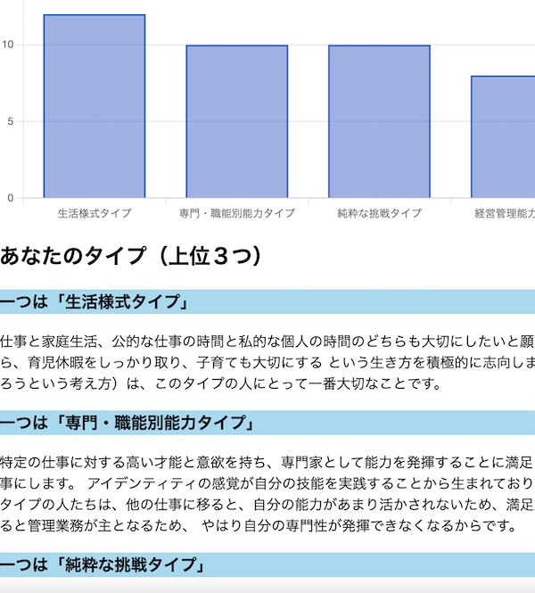

「自己分析診断アプリ」
開発環境
Ruby / Ruby on Rails / MySQL / GitHub / Heroku / Visual Studio Code
-
概要
制作時間 70時間 URL https://analysis-app-37848.herokuapp.com/ ID johnta PASS johnta123 -
動作テスト
テスト用アカウント
mail kanri@com PASS kanri123
OUTLINEアプリケーションの概要
複数の質問に回答するだけで、簡易的にキャリアに関する自己分析の診断ができます
＜働き方の価値観診断＞
40の質問に回答することにより、職業や職種、勤務先を選ぶ際の「判断基準」となる価値観を知ることができます。
-
開発に至った経緯
家族が人材関係の会社を経営しており、現在紙で利用している診断ツールをホームページ上から簡単に診断できるようにしてほしいと依頼があり作成しました
-
開発で工夫したこと
以下の３つの点を工夫しました。
①診断後のグラフの表示を特性の高い順に並び替えて表示
②８つあるタイプのうち、上位３つのタイプを表示
③管理者用を追加し、管理者は全員の診断結果の閲覧が可、管理者以外は自身の結果しか閲覧できないよう表示を設定
-
今後実装したいと思っていること
レスポンシブ対応 →スマホで診断をするユーザーも多いため、スマホ対応も行いたい
診断ツールの追加 →トップページに複数の診断をぶら下げられる使用としたため、複数の診断を行えるよう、機能UPをしていきたい